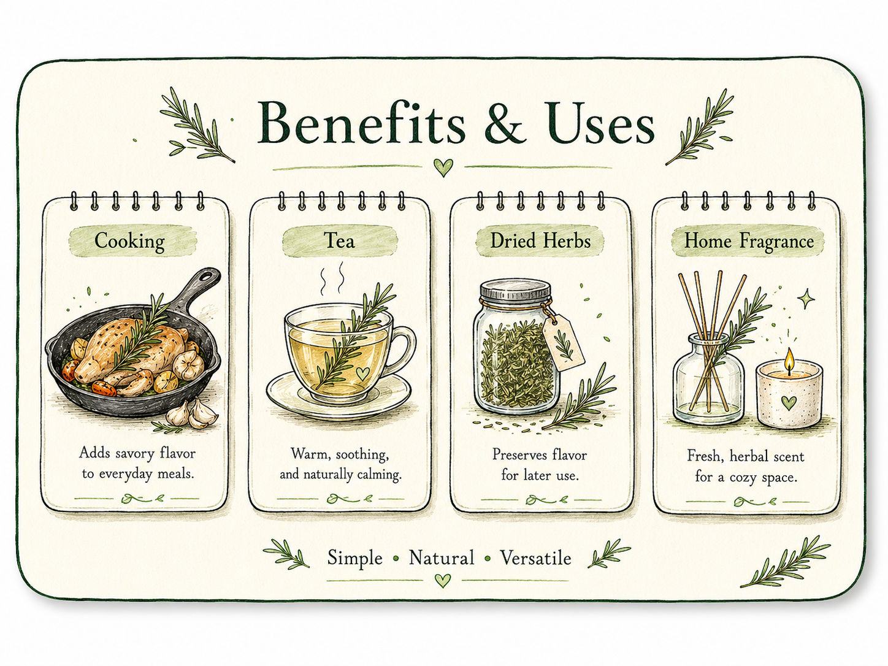
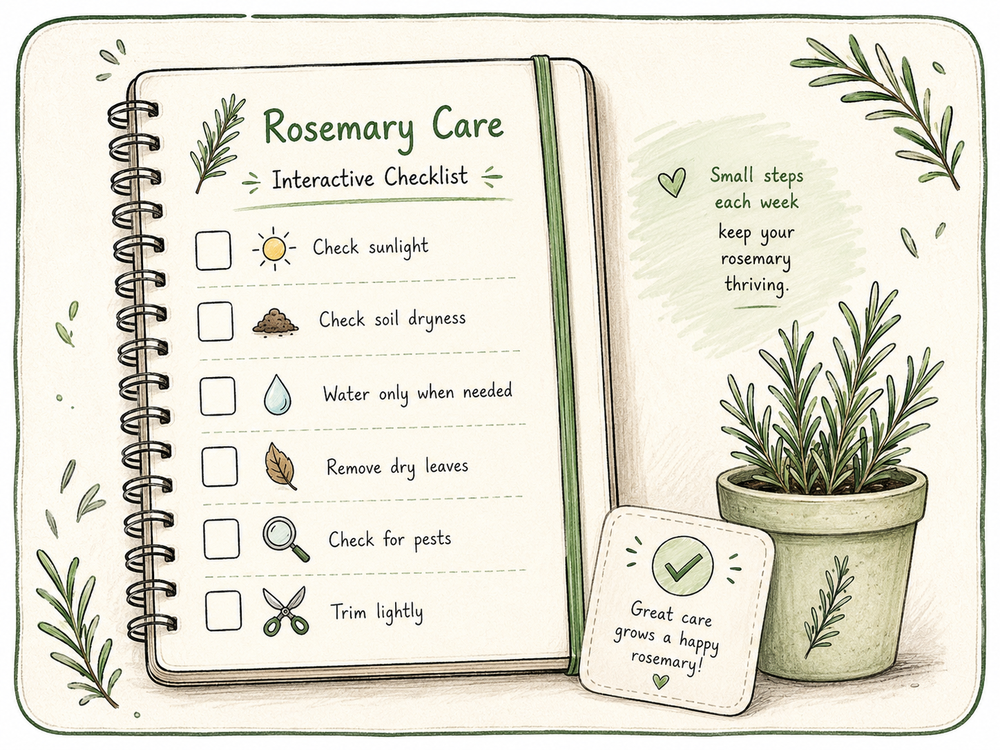
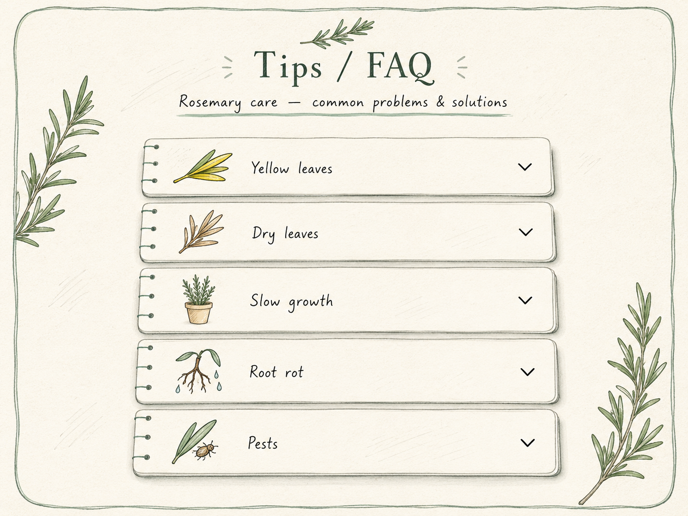

Sunlight
Give it at least 6 hours of bright, direct sun each day.
阳台护理笔记 · CSM3401
点开即用的迷迭香护理站：checklist · 浇水判断 · 可登录保存记录
Tip: 先做 Checklist，再试浇水工具；登录后可把今日记录存到 Firebase。
Personal care record
Create an account or log in so your checklist answers can be saved under your own Firebase user data.
Know your herb
Rosemary is a fragrant herb with needle-like leaves. It grows best in sunny places with well-drained soil. It can be used for cooking, tea, dried herbs, and natural home fragrance.
Give it at least 6 hours of bright, direct sun each day.
Use loose, well-drained potting mix in a pot with drainage holes.
Feel the topsoil first. Water deeply only when it is dry.
Enjoy small sprigs in meals, tea, dried blends, or home fragrance.
From pot to home
Harvest a little at a time and turn one balcony plant into something useful.

Add a fresh, woody aroma to roasted vegetables, bread, or family meals.
Steep a small rinsed sprig in hot water for a simple herbal drink.
Air-dry clean sprigs and store the leaves in a labelled, airtight jar.
Place dried sprigs in a small pouch for a fresh, natural scent.
Simple and practical
Move through these steps in order. The most important habit is checking the soil before watering.
Step 1
Prepare a pot with drainage holes and loose, well-drained soil.
Step 2
Place rosemary in a sunny balcony spot with good airflow.
Step 3
Check the top soil before watering and water only when it feels dry.
Step 4
Trim soft green stem tips lightly and remove dry leaves to keep the plant healthy.
Interactive care tool
Use this quick list once or twice a week. Check first, then act only when your plant needs it.
Please log in to save your rosemary care data.

Daily care history
Track your daily rosemary care answers and review previous records.
Please log in to save and view your daily rosemary care history.
| Date | Sunlight | Soil Dry | Drainage | Water | Leaves | Pests | Trim | Score |
|---|---|---|---|---|---|---|---|---|
| No daily records loaded yet. | ||||||||
Notice, understand, fix
Tap a question for a simple first action. Plant problems often come from water, light, or airflow.
Change one care habit at a time, then watch the plant for several days.
